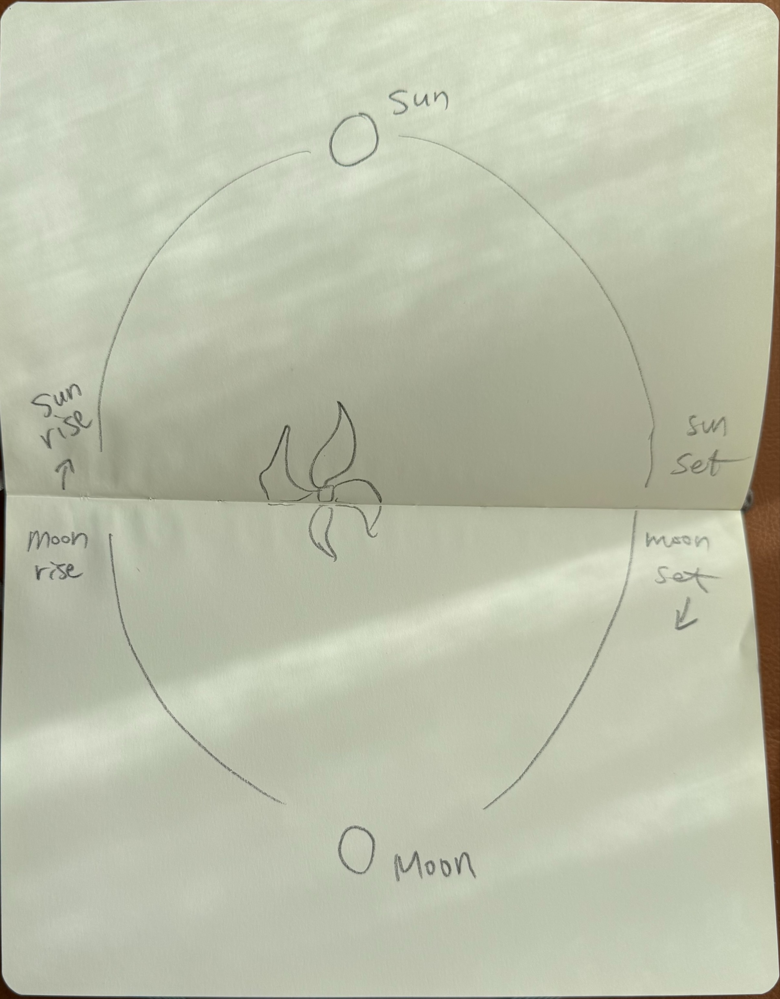

I was inspired by Timelines in the way it translates real-time data into visual changes of flowers bloom, sun, and moon rise and set. This encouraged me to think of time as something that could be experienced through movement, color, and transformation. The clock begins from the user's current time using hour(), minute(), and second(), while millis() accelerates the passage of time so that a complete day can be experienced within a short period. I used the LLM to ask for the process step by step, from the basic two filled circles, which is sun and moon. and then correlate with hour to show the animation and add mouse input. Then At flower at the center and add the bloom and pulse.
